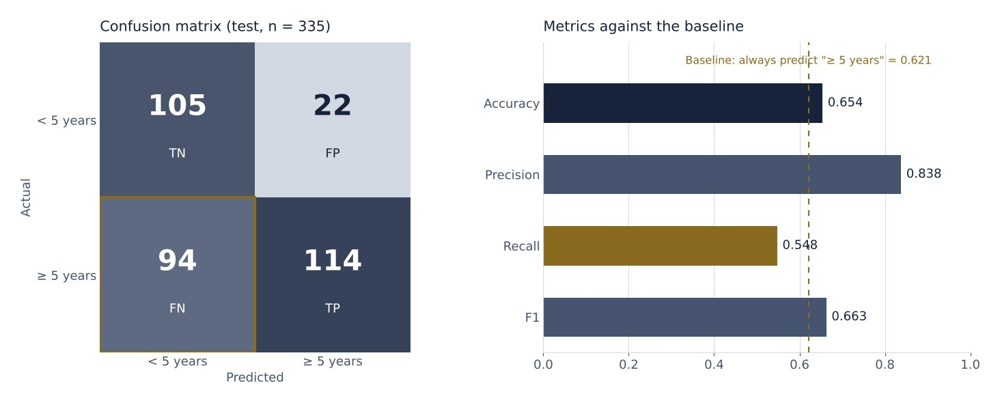

NBA career longevity
Will an NBA rookie still be in the league five years from now? A Gaussian Naive Bayes classifier trained on first-season statistics. It is right 84% of the time it predicts a long career, but it misses almost half of them.
- Role
- Modelling and evaluation, individual work
- Context
- Lab · Google Advanced Data Analytics
- Data
- 1,340 players · rookie-season statistics
- Tools
- Python, pandas, scikit-learn
The problem
A firm that advises NBA teams wants to know which players are most likely to last in the league. The target is binary: whether a player reaches a five-year career. The predictors are ten first-year statistics — field-goal, three-point and free-throw percentages, rebounds, assists, steals, blocks and turnovers — plus two variables built in an earlier feature-engineering lab: total points and efficiency.
Approach
- Target and predictors separated; 75/25 train/test split (1,005 and 335 players)
- Algorithm choice: binary target and continuous predictors, so Gaussian Naive Bayes
- Training and prediction with scikit-learn
- Evaluation with accuracy, precision, recall, F1 and a confusion matrix
Results
- Precision
- 0.838
- Recall
- 0.548
- Accuracy
- 0.654
- F1
- 0.663

What the numbers say
65% accuracy looks acceptable until it is compared with the simplest alternative. 62% of the test players did last five years, so always predicting "yes" is already right 62.1% of the time. The model improves on that by barely three points. Judged on accuracy alone, it would look useful without being so.
Its value is in precision. When the model says a player will last, it is right in 84 cases out of 100; it makes that mistake only 22 times. The trade-off is that it is cautious: of 208 players who lasted, it recognises 114. It can back a bet on a player, not rule anyone out.
What I would change
- Total points and efficiency are computed from other columns. That breaks Naive Bayes' independence assumption and counts the same information twice; I would test the model without them.
- Shooting percentages are bounded between 0 and 100 and are not normally distributed, which is what the Gaussian model assumes.
- I would move the decision threshold with
predict_probato gain recall at the cost of precision, depending on which error costs the team more. - I would use a stratified split with cross-validation, and a logistic regression as a point of comparison.
Deliverables
View the notebook Notebook · .ipynb
Practice lab for The Nuts and Bolts of Machine Learning, part of the Google Advanced Data Analytics programme on Coursera. The data is NBA rookie statistics prepared in the previous feature-engineering lab.